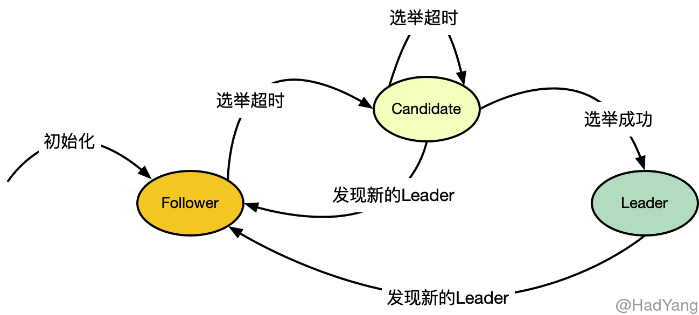
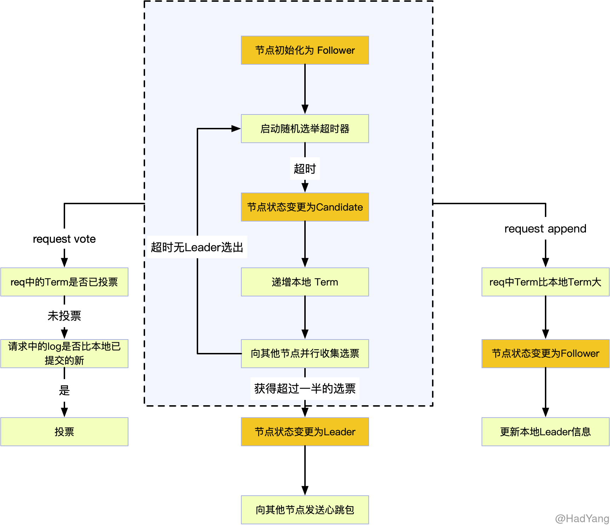
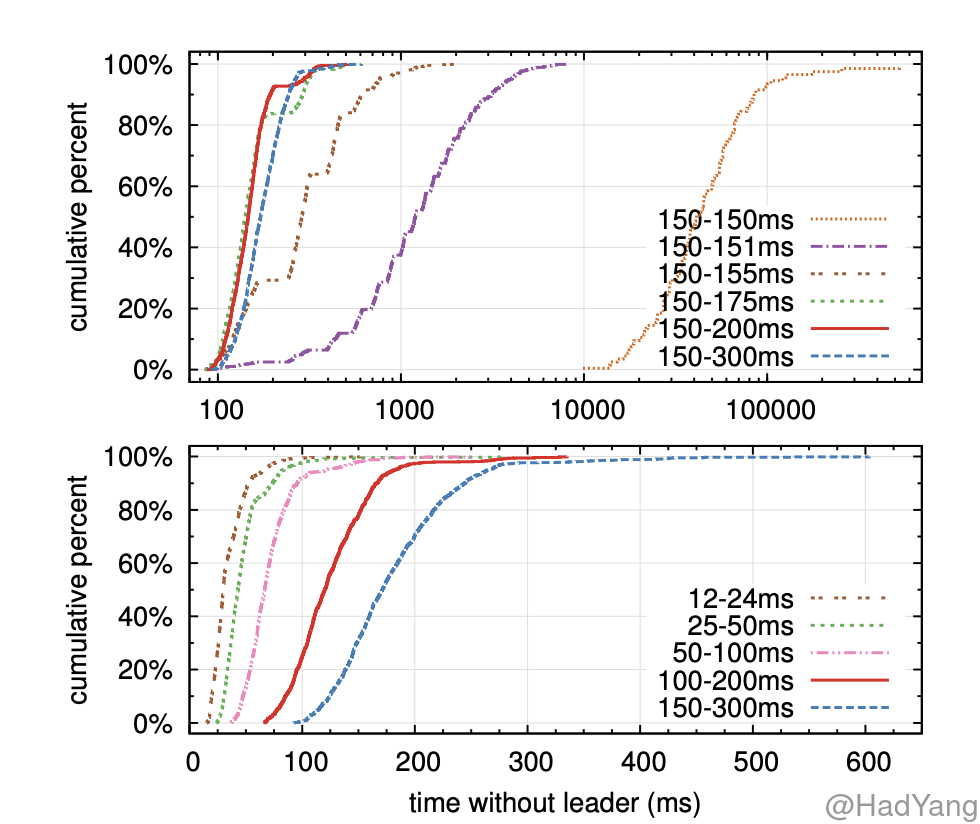

【Raft】选举过程
文章目录
Raft 简介
Raft 是一种共识算法，与 Paxos 有等效的容错能力和性能，同时又比 Paxos 更加容易理解。Raft 将共识问题拆分为几个独立的子问题，并且简单高效的解决了这些问题。
在之前的文章《什么是共识算法？》中有详细介绍共识算法。共识通常出现在状态机复制的背景下，状态机复制是构建容错系统的通用方法。在状态机复制集群中，每个服务器都有一个 状态机 和一组 日志，这个状态机就是我们需要容错，比如一个 KV 存储。
对客户端来说，即使其中小部分的服务器故障，整个集群的表现和单个可靠的状态机一致。每个状态机从日志中获取输入，共识算法就是要协调多个服务器在日志的顺序上达成共识。共识算法保证如果任意一个状态机将输入 $input_i$ 作为 $command_i$ 执行，那么所有状态机中一定存在 $command_i=input_i$。每个状态机都会以相同的顺序执行相同的命令，因此会产生一系列相同的输出并且到达相同的状态。
Raft 共识算法
Raft 通过选举产生的 Leader，并让 Leader 管理日志复制来实现共识。Leader 从客户端接受日志，把日志复制到其他服务器，并当 “安全” 时将日志应用到自己的状态机。选举 Leader 可以简化日志复制的复杂度，比如，Leader 可以决定放置新日志的位置，而不需要与其他服务器交互，并且日志的复制模型也很简单。当 Leader 故障或与其他服务器断开连接后，就会开启新一轮的选举过程。
Raft 在始终保证以下五个属性：
- 选举安全：在一个任期内最多只会选举出一个 Leader
- Leader 不覆盖日志：Leader 不会对自己的日志进行覆盖，只会追加日志条目
- 日志一致性：如果两个日志序列包含具有相同索引和任期的日志条目，则直到这个日志条目的所有日志条目都是相同的
- Leader 日志完整性：日志条目在某个任期被提交，则在之后的任期中，该条目都不会消失
- 状态机安全：如果一个日志在某节点的状态机上被应用，则不会存在相同索引的不同日志条目被应用到状态机
Raft 将整个共识问题分为了三个子问题：选举、日志复制、安全性保证。这三个子问题，会分为三个文章进行介绍。
节点状态
在任意时刻，Raft 集群中的节点均处于以下三种状态之一：Leader、Follower 和 Candidate。通常情况下，集群中只有一个 Leader，其他节点均为 Follower。
Follower 是被动的，它们本身不发出请求，只是响应 Leader 或 Candidate 发出的请求。 Leader 会处理所有的客户端请求，如果客户端请求到 Follower ，Follower 会把请求转发到 Leader。Candidate 是集群选举过程中的一个中间状态。

如果 Follower 在选举超时时间内没有收到请求，则其状态会变更为 Candidate，并且开始选举过程。当 Candidate 获取到集群中大多数节点的选票后，其状态变更为 Leader。通常来说， Leader 状态会持续到 Leader 节点故障。
任期
Raft 协议将现实中的时间划分为任意长度的 Term（任期），Term 是连续增长的整数。每个新的 Term 都伴随一次选举，当 Candidate 获取到大多数节点的选票后，Candidate 就作为集群中这个 Term 的 Leader。在某些情况下，会出现多个 Candidate 选票数一样的情况，这种情况下，当前的 Term 就会直接结束，并开启下一轮选举。
不同的节点可能会在不同的时间观察到 Term 的变化，甚至节点可能对选举过程完全无感知（节点已失效）。 Term 在集群中作为 逻辑时钟，每个节点都会保存一个 “当前任期” 的变量，这个变量是单调递增的，这样就可以让节点检测到集群的 Leader 是否已经变化。
节点每次请求的时候，都会携带当前节点 “当前任期”，如果一个节点接受到比自己 “当前任期” 大的请求，则更新自己的 “当前任期”。如果 Candidate 或者 Leader 发现有比自己大的 “当前任期”，则会将自己的状态转变为 Follower。如果节点接收到比自己小的 “当前任期” 的请求，则会拒绝该请求。
选举
在 Raft 协议中，节点之间通过 RPC 进行通信。一般情况下有两种请求： RqeustVote 和 AppendEntries，第一个请求用作获取选票，第二个请求用作日志复制和心跳包（当 Entries 为空时）。下面是 RequstVote 的请求和响应：
message RequestVoteRequest {
uint64 term = 1; // 候选人的任期号
uint64 candidate_id = 2; // 请求投票的候选人 id
uint64 last_log_index = 3;// 候选人最新日志条目的索引值
uint64 last_log_term = 4;// 候选人最新日志条目对应的任期号
}
message RequestVoteResponse {
uint64 term = 1; //目前的任期号，用于候选人更新自己
bool vote_granted = 2;//如果候选人收到选票为 true
}
Raft 协议中，所有节点初始均为 Follower 状态，初始化本地数据后，就会启动一个 随机 的选举超时器。在选举超时器过期前，如果收到来自 Leader 的 AppendEntries 请求，则会对请求信息与本地信息进行比对，如果满足条件则当前集群有合法 Leader。
如果在 选举超时 时间内 Follower 没有收到心跳包，则 Follower 会认为当前集群无合法 Leader ，并发起新一轮的选举。如下图所示：

在将本节点变更为 Candidate 后，递增本节点的 Term。向本节点投票，并且向其他节点并发的发起 RequstVote 请求。 Candidate 只有在以下两种情况才会迁移状态：
- Candidate 获得超过半数的投票
- Candidate 收到合法 Leader 的
AppendEntries请求
当出现选票分裂（多个 Candidate 均未拿到合法选票个数）时，Raft 会再次启动随机的选举超时器，用于进行下一次选举。通常，随机的时间范围在 150ms ~ 300ms 之间，通过随机打散各个节点的超时时间，在大多数情况下只会有一个节点超时，发起下一次选举。这种随机超时的方式，示 Raft 能有效减小再次出现选票分裂的概率。
超时时间的选择
这里借用 Raft 论文中的一个测试结果，这里测试是在 5 个节点的环境中，并且心跳间隔在 15ms 左右。两幅图中，上面的图是改变了超时时间的随机性，下面的图是改变了超时时间的最小值。可见，随机性越大，最小超时时间越小，整个集群无 Leader 的时间就越短。

这里解释下上面的结果，横坐标代表集群中没有 Leader 的时间，纵坐标代表实验次数的占比。比如 100~200ms 这条线，表示集群中的 “选举超时时间” 在100~200ms，并且在多次实验中，超过90%的实验无 Leader 的状态少于 200ms。
Leader 合法性
在处理 Candidate 的 RequstVote 请求时，不止要比较 Term，还需要比较 Log 的信息。这里校验时需要保证 Leader 的合法性， Leader 的合法性就体现在其日志是否是 最新 的。
在所有 Leader-Base 的共识算法中，Leader 必须保存所有已提交（包含前任 Leader 提交的）的日志，同时 Leader 不能覆盖 已提交的日志。这就意味着，整个集群中日志数据的流向是 单一 的 —— 从 Leader 到 Follower，大大简化了集群交互机制。
Raft 通过一个简单的方法来保证 Leader 保存所有已提交的日志：在选举过程中 Candidate 必须与 超过半数 的节点进行交互，这就意味着每个已提交的日志，至少存在于这些节点中的一个节点上（日志提交要求至少半数以上的节点确认）。如果 Candidate 的日志对于大多数节点来说都是 “最新” 的，那么可以认为 Candidate 包含所有已提交的日志，则这个选举出来的 Leader 是合法的。
“最新”：如果
RequstVote请求中的last_log_term于本节点last_log_term相同，则更大的last_log_index为最新；如果last_log_term与本节点last_log_term不同，则 Term 大的为最新。